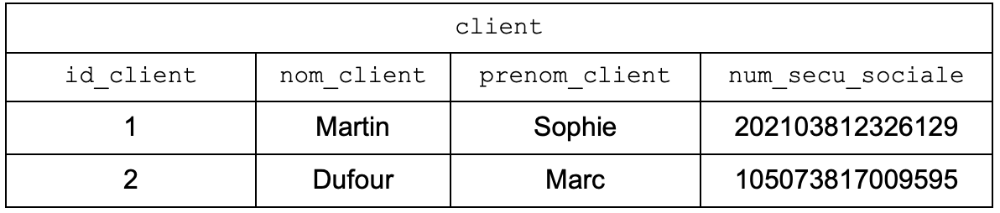
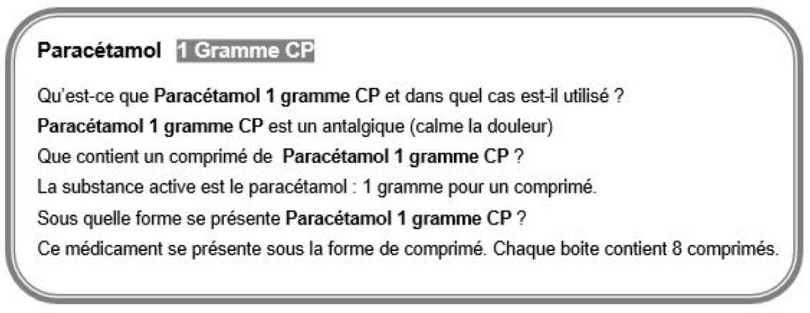
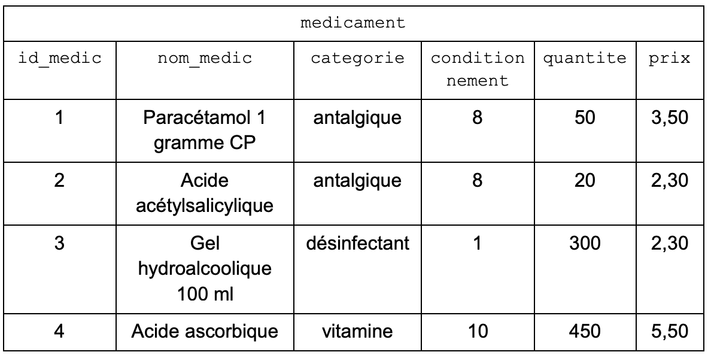
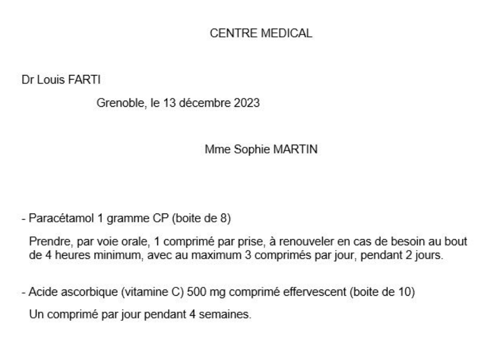
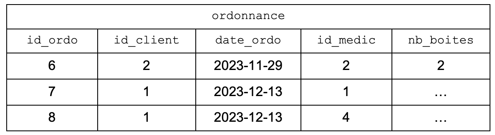
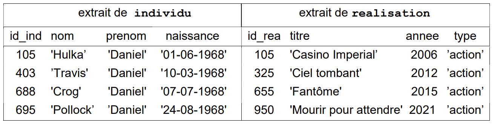
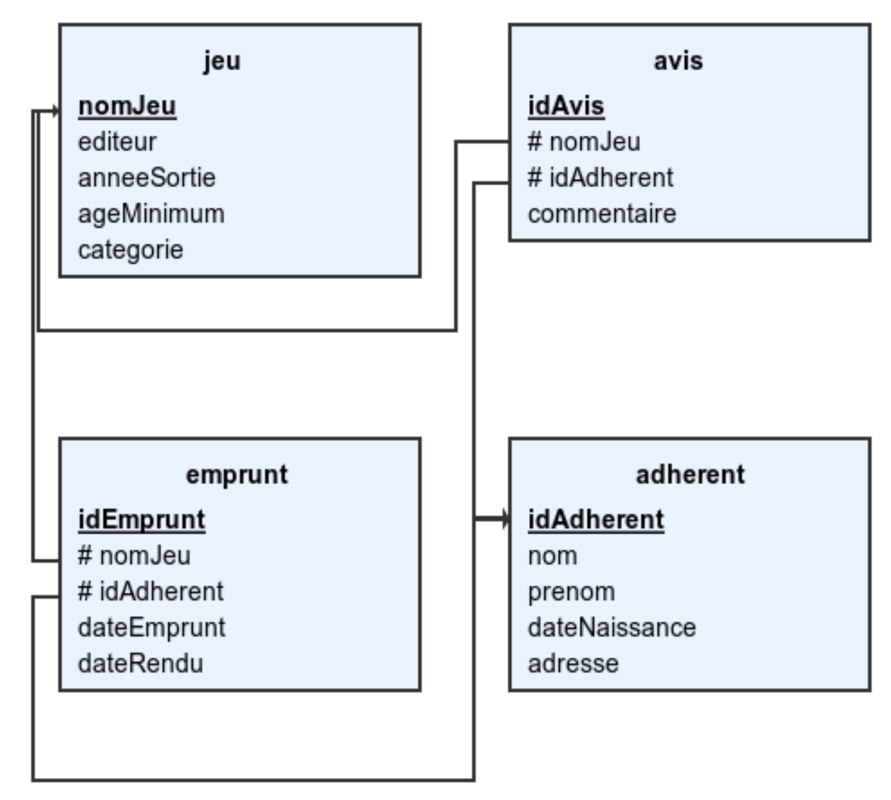
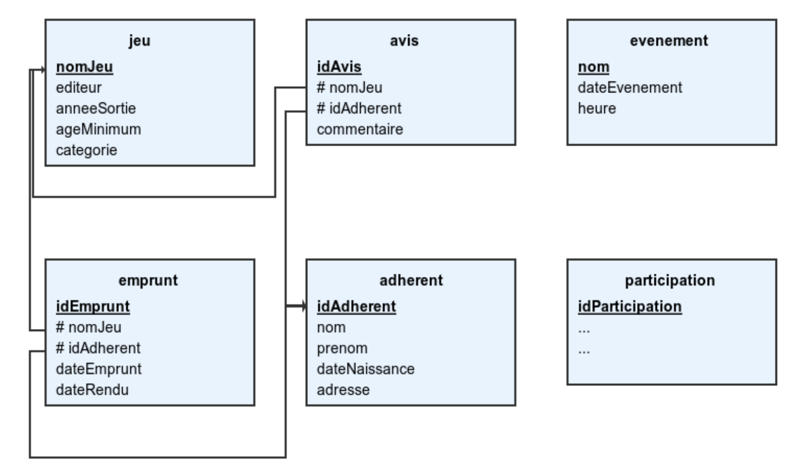

BDD SQL
Bac 2024 Amerique du Nord: Exercice 3
Cet exercice porte sur le langage SQL et les bases de données.
sqlUn pharmacien nouvellement installé décide de créer son propre système de gestion des médicaments qu’il délivre à ses clients. Pour sa base de données relationnelle, il a déjà élaboré la première relation à l’aide des données indiquées sur les cartes vitales de ses deux premiers clients :

- Écrire le résultat de l’exécution de la requête SQL suivante :
Pour écrire la relation medicament, il doit utiliser les informations fournies par la notice
des médicaments. En voici une ci-dessous :

Informations extraites de la notice du médicament Paracétamol 1 gramme CP.
La relation medicament suivante a été obtenue à l’aide de ces notices :
La table des médicaments de son officine est présentée ci-dessous.

- Écrire une requête SQL permettant d’afficher les noms de tous les médicaments dont le prix est strictement inférieur à 3 euros. Madame Martin présente au pharmacien une nouvelle ordonnance :

Ordonnance de Madame Sophie Martin.
Il saisit les informations de cette ordonnance dans la relation ordonnance, chaque médicament prescrit correspondant à un enregistrement dans la table ci-dessous.

- Ecrire une requête SQL permettant d’ajouter les informations de la carte vitale de sa troisième cliente présentée ci-dessous :
Image de la carte vitale extraite de la page wikipédia
- Donner les attributs qui doivent être déclarés comme clés étrangères de la
relation
ordonnanceet en préciser l’utilité. - Indiquer, pour les lignes 7 et 8 de la table
ordonnance, le nombre de boites prescrites. - Écrire la requête SQL mettant à jour la quantité du médicament Acide ascorbique en stock dans l’officine du pharmacien suite au passage de Madame Martin.
- Calculer le coût total des médicaments fournis à Madame Martin (on ne demande pas d’écrire une requête ici, mais de calculer le coût total en justifiant le calcul).
- Écrire la requête SQL permettant d’afficher le nom du médicament pour
l’ordonnance ayant l’
id_ordonuméro 6.
Bac 2022 Polynesie: Exercice 3
Cet exercice traite du thème « base de données », et principalement du modèle relationnel et du langage SQL.
sqlL’énoncé de cet exercice peut utiliser les mots du langage SQL suivants :
CREATE TABLE, SELECT, FROM, WHERE, JOIN ON, INSERT INTO, VALUES, UPDATE, SET, DELETE, COUNT, DISTINCT, AND, OR, AS, ORDER BY, ASC, DESC
Un site web recueille des données de navigation dans une base de données afin d’étudier les profils de ses visiteurs.
Chaque requête d’interrogation d’une page de ce site est enregistrée dans une première table dénommée Visites sous la forme d’un 5-uplet : (identifiant, adresse IP, date et heure de visite, nom de la page, navigateur).
Le chargement de la page index.html par 192.168.1.91 le 12 juillet 1998 à 22h48 aura par exemple été enregistré de la façon suivante :
(1534, "192.168.1.91", "1998-07-12 22:48:00", "index.html", "Internet explorer 4.1").
La commande SQL ayant permis de créer cette table est la suivante:
Question 1
A. Donner une commande d’interrogation en langage SQL permettant d’obtenir l’ensemble des 2-uplets (adresse IP, nom de la page) de cette table.
B. Donner une commande en langage SQL permettant d’obtenir l’ensemble des adresses IP ayant interrogé le site, sans doublon.
C. Donner une commande en langage SQL permettant d’obtenir la liste des noms des pages visitées par l’adresse IP 192.168.1.91
Ce site web met en place, sur chacune de ses pages, un programme en javascript qui envoie au serveur, à intervalle régulier de 15 secondes, le temps en secondes de présence sur la page. Ces envois contiennent tous la valeur de identifiant correspondant au chargement initial de la page.
Par exemple, si le visiteur du 12 juillet 1998 est resté 65 secondes sur la page, celle-ci a envoyé au serveur les 4 doublets (1534, 15), (1534, 30), (1534, 45) et (1534, 60).
Ces données sont enregistrées dans une table nommée Pings créée avec la commande ci-dessous :
En plus de l’inscription d’une ligne dans la table Visites, chaque chargement d’une nouvelle page provoque l’insertion d’une ligne dans la table Pings comprenant l’identifiant de ce chargement et une durée de 0.
Les attributs identifiant des tables Visites et Pings partagent les mêmes valeurs.
Question 2
A. De quelle table l’attribut identifiant est-il la clé primaire ?
B. De quelle table l’attribut identifiant est-il une clé étrangère ?
C. Par conséquent, quelles vérifications sont automatiquement effectuées par le système de gestion de base de données ?
Question 3
Le serveur reçoit le doublet (identifiant, duree) suivant : (1534, 105).
Écrire la commande SQL d’insertion qui permet d’ajouter cet enregistrement à la
table Pings.
On envisage ensuite d’optimiser la table en se contentant d’une seule ligne par
identifiant dans la table Pings : les valeurs de l’attribut duree devraient alors être mises à jour à chaque réception d’un nouveau doublet (identifiant, duree).
Question 4
A. Écrire la requête de mise à jour permettant de fixer à 120 la valeur de l’attribut duree associée à l’identifiant 1534 dans la table Pings.
B. Expliquer pourquoi on ne peut pas être certain que les données envoyées par une page web, depuis le navigateur d’un client, via plusieurs requêtes formulées en javascript, arrivent au serveur dans l’ordre dans lequel elles ont été émises.
C. En déduire qu’il est préférable d’utiliser une requête d’insertion plutôt qu’une requête de mise à jour pour ajouter des données à la table Pings.
Question 5
Écrire une requête SQL utilisant le mot-clef JOIN et une clause WHERE,
permettant de trouver les noms de toutes les pages qui ont été consultées plus
d’une minute par au moins un utilisateur.
Bac 2022 metropole1: Exercice 2
Cet exercice porte sur les bases de données.
sqlOn pourra utiliser les mots clés SQL suivants : SELECT, FROM, WHERE, JOIN, ON, INSERT, INTO, VALUES, UPDATE, SET, AND.
Nous allons étudier une base de données traitant du cinéma dont voici le schéma relationnel qui comporte 3 relations :
- la relation
individu(id_ind, `nom, prenom, naissance) - la relation
realisation(id_rea,titre, annee, type) - la relation
emploi(id_emp,description, #id_ind, #id_rea)
Les clés primaires sont en gras et les clés étrangères sont précédées d’un #.
Ainsi emploi.id_ind est une clé étrangère faisant référence à individu.id_ind.
Voici un extrait des tables individu et realisation :

1310 × 330
Question 1
On s’intéresse ici à la récupération de données dans une relation.
a A. Écrire ce que renvoie la requête ci-dessous :
B. Fournir une requête SQL permettant de récupérer le titre et la clé primaire de chaque film dont la date de sortie est strictement supérieure à 2020.
Question 2
Cette question traite de la modification de relations.
A. Dire s’il faut utiliser la requête 1 ou la requête 2 proposées ci-dessous pour modifier la date de naissance de Daniel Crog. Justifier votre réponse en expliquant pourquoi la requête refusée ne pourra pas fonctionner.
Requête 1:
Requête 2:
B. Expliquer si la relation individu peut accepter (ou pas) deux individus portant le même nom, le même prénom et la même date de naissance.
Question 3
Cette question porte sur la notion de clés étrangères.
A. Recopier sur votre copie les demandes ci-dessous, dans leur intégralité, et les compléter correctement pour qu’elles ajoutent dans la relation emploi les rôles de Daniel Crog en tant que James Bond dans le film nommé ‘Casino
Impérial’ puis dans le film ‘Ciel tombant’.
B. On désire rajouter un nouvel emploi de Daniel Crog en tant que James Bond dans le film ‘Docteur Yes’.
Expliquer si l’on doit d’abord créer l’enregistrement du film dans la relation
realisation ou si l’on doit d’abord créer le rôle dans la relation emploi.
Question 4
Cette question traite des jointures.
A. Recopier sur votre copie la requête SQL ci-dessous, dans son intégralité, et la compléter de façon à ce qu’elle renvoie le nom de l’acteur, le titre du film et l’année de sortie du film, à partir de tous les enregistrements de la relation emploi pour lesquels la description de l’emploi est 'Acteur(James Bond)'.
B. Fournir une requête SQL permettant de trouver toutes les descriptions des emplois de Denis Johnson (Denis est son prénom et Johnson est son nom). On veillera à n’afficher que la description des emplois et non les films associés à ces emplois.
Exercice 2 25-NSIJ2ME1:
Cet exercice porte sur les bases de données relationnelles, le langage SQL et la programmation.
sql python tableaux sqlite
Partie A
sqlUne ludothèque municipale a décidé de moderniser sa gestion en créant une base de données informatique. Cette base de données permettra de suivre les jeux disponibles, les emprunts effectués par les adhérents, ainsi que les avis laissés sur les différents jeux. Pour commencer, quatre tables principales ont été identifiées : jeu, adhérent, emprunt et avis. Ces tables et leurs relations vont permettre de stocker toutes les informations essentielles au bon fonctionnement de la ludothèque. On va considérer que la ludothèque n’a qu’un exemplaire de chaque jeu (deux jeux de la ludothèque ne peuvent donc pas avoir le même nom).

La base de données de la ludothèque
Dans la figure ci-dessus, les clés primaires de chacune des tables sont soulignées et les clés étrangères sont précédées du symbole #.
Dans cet exercice, on pourra utiliser les clauses du langage SQL pour :
- construire des requêtes d’interrogation à l’aide de
SELECT,FROM,WHERE(avec les opérateurs logiquesAND,OR) etJOIN ... ON; - construire des requêtes d’insertion et de mise à jour à l’aide de
UPDATE,INSERTetDELETE; - affiner les recherches à l’aide de
DISTINCTetORDER BY; - réaliser des agrégations à l’aide de
COUNT,SUMouAVG.
Par exemple, l’instruction SQL suivante donne le nombre de jeux présents dans la table jeu:
SELECT COUNT(nomJeu) FROM jeu;
- Expliquer pourquoi on ne peut pas prendre l’attribut nom comme clé primaire pour la relation adherent.
- Décrire ce que donne la requête SQL suivante :
Lorsque qu’un jeu est emprunté et n’a pas encore été rendu, la valeur de l’attribut
dateRendu de la table emprunt est à NULL.
- Écrire une requête permettant de connaitre le nom de tous les jeux qui sont en cours d’emprunt.
- Écrire une requête SQL pour afficher le nom et le prénom de tous les adhérents qui ont emprunté le jeu “Catan”.
- Claire VOYANT, adhérente de longue date à cette ludothèque, a emprunté le
jeu “Catan” et l’a rendu le 3 juin 2025. Lors de l’emprunt, la valeur de
id_empruntétait 1538. Écrire une requête SQL qui a permis de mettre à jour la base de données afin qu’elle prenne en compte que ce jeu a été rendu. Toutes les dates de la base de données sont écrites sous le format'AAAA-MM-JJ'. - Écrire une requête SQL qui permet de trouver le nom et la catégorie de tous les jeux de la ludothèque sortis à partir de 2010 et dont l’âge minimum est strictement inférieur à 10 ans.
On modifie la table avis pour ajouter une note (entier 0-5) pour chaque jeu à l’aide de l’attribut note.
- Ecrire une requête sql qui calcule la moyenne des notes obtenues pour le jeu “Catan”.
La ludothèque décide d’organiser des événements. Pour cela, elle ajoute une relation
evenement à sa base de données. En outre, pour chaque événement, elle souhaite
garder en mémoire une trace des adhérents qui y ont participé. À cette fin, elle
complète sa base avec une relation participation.

La base de données de la ludothèque actualisée
- Proposer les clés étrangères de la table participation en précisant le nom des attributs auxquels elles font référence.
- Proposer une requête qui identifie les adherants qui ont participé à l’evenement de nom “concours_pokemon”.
- Ecrire la requête qui compte le nombre de participations par membre aux differents evenements (GROUP BY
id_adherant), et retourne une liste ordonnée de manière décroissante de participations pour ces membres.
Partie B
python tableaux sqlite
Le programme Python suivant permet de créer la liste de tous les jeux empruntés, sachant que, dans celle-ci, un jeu va apparaître autant de fois qu’il a été emprunté.
- Écrire un script Python permettant de créer le dictionnaire
dict_empruntsqui, à chaque jeu emprunté, associe le nombre de fois où il a été emprunté.
On veut créer un podium des jeux les plus souvent empruntés. Comme il peut y avoir des égalités à la première, deuxième ou troisième place, il peut y avoir plus de trois jeux sélectionnés sur le podium.
Par exemple, si le dictionnaire des emprunts est :
il y aura sur le podium les jeux “Agricola”, “Puerto Rico” et “Caylus” puis les jeux “Dominion” et “Codenames” et enfin le jeu “Terraforming Mars”.
Pour modéliser ce podium en Python, on va utiliser une liste de trois listes. Pour l’exemple précédent, cette liste sera :
[["Agricola", "Puerto Rico", "Caylus"], ["Dominion", "Codenames"], ["Terraforming Mars"]]
- Proposer un script Python permettant de générer ce podium.